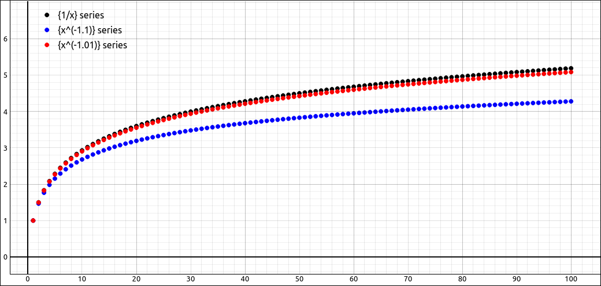
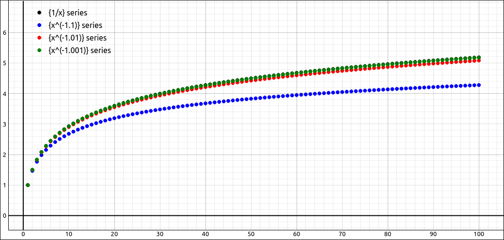

Convergence and Divergence Tests for Series#
Discussion & Definitions#
Most Calculus textbooks will devote several sections to tests of convergence and divergence. Some computer algebra systems have series testing built into them which use these techniques as well as some more sophisticated techniques. While most of the time these techniques are for by-hand calculations they do result in some useful results in both theory and application. We will not go through the details in the derivations of these tests, your textbook should have plenty of those details. In this section all of our examples will be using the CLAE software package.
The Divergence Test#
Theorem: Convergent Series \(n^{th}\) Term
If \(\displaystyle \sum_{n = 1}^\infty a_n\) converges then \(\displaystyle \lim_{n = \infty} a_n = 0\).
Note that the converse of this statement is not true, it is possible for \(\displaystyle \lim_{n = \infty} a_n = 0\) and have \(\displaystyle \sum_{n = 1}^\infty a_n\) diverge, just consider the harmonic series from the last section. On the other hand, the contrapositive of this statement is true,
Theorem: The Divergence Test
If \(\displaystyle \lim_{n = \infty} a_n \neq 0\) then \(\displaystyle \sum_{n = 1}^\infty a_n\) diverges.
Example: \(\sum_{n = 1}^\infty \frac{\left(n - 1\right) \left(2 n + 1\right)}{\left(n + 1\right)^{2}}\)#
We can tell by inspection that this series will diverge since the limit of the nth term will be 2. Using CLAE, input the expression,
(n - 1)*(2*n + 1)/(n + 1)^2
Then select Calculus > Sums > Test Sum Convergence, the variable is n, beginning index is 1 and the ending index is oo. The result is False. With CLAE, which uses SymPy under the hood, the result of this option is True if the series converges, False if it diverges, and an error if it is not able to determine convergence or divergence. Hence we know that this series diverges.
The Integral Test#
The integral test is derived by comparing the series sum represented as rectangle areas (a Riemann Sum) and the area under the curve of \(f(x)\) where \(f(n) = a_n\). It has a number of interesting results including a method for establishing error bounds on a series approximation.
Theorem: The Integral Test
Given a series \(\displaystyle \sum_{n = 1}^\infty a_n\) of positive terms and a function \(f(x)\) with \(f(n) = a_n\) for all \(n \geq N\). If \(f(x)\) is continuous and decreasing (for \(x \geq N\)), we have that both \(\displaystyle \sum_{n = 1}^\infty a_n\) and \(\displaystyle \int_N^\infty f(x) \; dx\) either both converge or both diverge.
Example: \(\sum_{n = 1}^\infty \frac{1}{n^3}\)#
Input the nth term expression into the CAS,
1/n^3
Then select Calculus > Sums > Test Sum Convergence, variable n, beginning index 1, ending index oo. The result is True indicating that the series converges. If we tried to find the actual sum and selected Calculus > Sums > Sum, variable n, beginning index 1, ending index oo. The result is \(\zeta\left(3\right)\), which is the zeta function and beyond our discussion focus here, its approximation is 1.2020569031595942854.
A small generalization og this example is that of a *p-series*
Definition: P-Series
For any real number p,the series
is called a p-series. From the integral test is is easy to deduce that a p-series converges if \(p > 1\) and diverges if \(p \leq 1.\)
Example: There is a Fine Line Between Convergence and Divergence#
Looking at the p-series above we know that \(\displaystyle \sum_{n = 1}^\infty \frac{1}{n}\) diverges whereas \(\displaystyle \sum_{n = 1}^\infty \frac{1}{n^{1.1}}\), \(\displaystyle \sum_{n = 1}^\infty \frac{1}{n^{1.001}}\), and even \(\displaystyle \sum_{n = 1}^\infty \frac{1}{n^{1.00000000000000000001}}\) converges.
To get a feel of how close these can be input 1/x, 1/x^1.1 and 1/x^1.01 into the CLAE CAS. If you test the sum convergence on the last two you will get True. Graph all three of these, in each case first change the type to Sequence/Series, then go into the properties of each and change Sequence to Series. Zooming out a little gives you the following picture.

Plot of \(1/x, 1/x^{1.1},\) and \(1/x^{1.01}.\)#
As you can see the series partial sums between the convergent \(\displaystyle \sum_{n = 1}^\infty \frac{1}{n^{1.01}}\) and the divergent \(\displaystyle \sum_{n = 1}^\infty \frac{1}{n}\) are extremely close. If we go further to the convergent series \(\displaystyle \sum_{n = 1}^\infty \frac{1}{n^{1.001}}\) we see no difference between the graph of this and that of the harmonic series in the first 100 partial sums.

Plot of \(1/x, 1/x^{1.1}, 1/x^{1.01},\) and \(1/x^{1.001}.\)#
Another very nice consequence of the integral test is that if the integral test can be applied to a function then we can place bounds on the error of the partial sum estimations of the series. This comes in handy when we cannot find the exact sum of the series.
Theorem: Remainder Estimate from the Integral Test
Given a series \(\displaystyle \sum_{n = 1}^\infty a_n\) of positive terms and a function \(f(x)\) with \(f(n) = a_n\) for all \(n \geq N\). If \(f(x)\) is continuous and decreasing (for \(x \geq N\)), and we let \(s_n = \displaystyle \sum_{k = 1}^n a_k\) be the nth partial sum, then the remainder estimate (that is the error in the \(s_n\) approximation) of the sum is,
Furthermore since \(\displaystyle \sum_{n = 1}^\infty a_n = s_n + R_n\) we have,
Example: Bounds for \(\sum_{n = 1}^\infty \frac{1}{n^3}\)#
As we saw in a previous example we cannot get an exact value to the series \(\sum_{n = 1}^\infty \frac{1}{n^3}\). We will use the integral test bounds to estimate the error in using the first 10 terms of this series as an estimate.
Input the expression into CLAE,
1/n^3
Find the estimate \(s_{10}\) with Calculus > Sums > Approximate Sum, variable, n, beginning index of 1 and ending index of 10, the result is 1.197531985674193. Now select the function, then select Calculus > Definite Integral, variable n, lower bound of 10, and upper bound of oo, the result is 1/200. Do the same with a lower bound of 11 to get 1/242. So we know the error is in the range,
So the sum is in the range,
Comparison Tests#
A comparison test is just like it says, we will take a series we know and compare it to a series we do not know to determine the convergence or divergence of the unknown series. There are two types of comparison tests, a direct comparison test and a limit comparison test. Both of these take an unknown series and compare it to a known series, in both cases you need to select the known series.
Theorem: Direct Comparison Test
If \(0 \leq a_n \leq b_n\) for all \(n \geq N\) and if \(\displaystyle \sum_{n=1}^\infty b_n\) converges so does \(\displaystyle \sum_{n=1}^\infty a_n.\)
If \(0 \leq a_n \leq b_n\) for all \(n \geq N\) and if \(\displaystyle \sum_{n=1}^\infty a_n\) diverges so does \(\displaystyle \sum_{n=1}^\infty b_n.\)
Theorem: Limit Comparison Test
If \(a_n, b_n \geq 0\) for all \(n\) then
If \(\displaystyle \lim_{n \to \infty} \frac{a_n}{b_n} = L \neq 0\) then \(\displaystyle \sum_{n=1}^\infty a_n\) and \(\displaystyle \sum_{n=1}^\infty b_n\) both converge or both diverge.
If \(\displaystyle \lim_{n \to \infty} \frac{a_n}{b_n} = 0\) and \(\displaystyle \sum_{n=1}^\infty b_n\) converges then \(\displaystyle \sum_{n=1}^\infty a_n\) also converges.
If \(\displaystyle \lim_{n \to \infty} \frac{a_n}{b_n} = \infty\) and \(\displaystyle \sum_{n=1}^\infty b_n\) diverges then \(\displaystyle \sum_{n=1}^\infty a_n\) also diverges.
One thing to note about the limit comparison test is that there are cases where the test fails. For example, if \(\displaystyle \lim_{n \to \infty} \frac{a_n}{b_n} = 0\) and \(\displaystyle \sum_{n=1}^\infty b_n\) diverges then we can say nothing about \(\displaystyle \sum_{n=1}^\infty a_n\). Similarly, if \(\displaystyle \lim_{n \to \infty} \frac{a_n}{b_n} = \infty\) and \(\displaystyle \sum_{n=1}^\infty b_n\) converges then we can say nothing about \(\displaystyle \sum_{n=1}^\infty a_n.\)
Example: \(\sum_{n = 1}^\infty \frac{1}{n^{2} - n \sin{\left(n \right)}}\)#
Input the expression into CLAE,
1/(n^2 - n*sin(n))
select Calculus > Sums > Test Sum Convergence, variable n, beginning index is 1, and ending index is oo. The result is True, so we know the series converges. If we try to find the actual sum we just get the sum back. We will apply the comparison test and the limit comparison test to this sum. We will start with the comparison test. Note that
as long as \(n > 2\). Since \(\displaystyle \sum_{n = 3}^\infty \frac{2}{n^2} = 2 \sum_{n = 3}^\infty \frac{1}{n^2}\) converges so does \(\displaystyle \sum_{n = 3}^\infty \frac{1}{n^{2} - n \sin{\left(n \right)}}\) and hence \(\displaystyle \sum_{n = 1}^\infty \frac{1}{n^{2} - n \sin{\left(n \right)}}\).
Although we did this without a computer algebra system we could get a visualization to help with the inequalities by graphing the denominators.
For the limit comparison test we will use \(\displaystyle \sum_{n = 1}^\infty \frac{1}{n^2}\) which we know converges by the p-series test. Input
1/n^2
then take the ratio, since these are in the CAS you only need to input something like R1/R2, the result should be,
Now select Calculus > Limit, the variable is n and the limit point is oo. The result is 1 which implies that \(\displaystyle \sum_{n = 1}^\infty \frac{1}{n^{2} - n \sin{\left(n \right)}}\) converges.
Alternating Series Test#
An alternating series is simpl one where each term in the series alternates between positive and negative. More specifically,
Definition: Alternating Series
An alternating series can be written in the form
where \(a_n > 0.\)
Alternating series have a very easy way to verify their convergence.
Theorem: Alternating Series Test
Given an alternating series of either form,
If \(0 < a_{n+1} \leq a_{n}\) for \(n \leq N\) and \(\displaystyle \lim_{n \to \infty} a_n = 0\) then the series converges.
In addition, it has a very easy way to calculate an error bound on a partial sum approximation, it is simply the first term that is omitted from the partial sum.
Theorem: Alternating Series Remainder
Given a convergent alternating series of either form,
The error, \(R_n,\) in using \(s_n\) as an approximation for the sum is \(|R_n| \leq a_{n+1}.\)
Example: \(\sum_{n= 1}^\infty \frac{(-1)^{n+1}}{n^2}\)#
First we will show that this series converges by the alternating series test and then calculate an error bound. It is a bit beyond the scope of a Calculus class but the actual value of this sum is \(\frac{\pi^{2}}{12} \approx 0.82246703342411321824\).
To apply the alternating series test first input the expression,
(-1)^(n + 1)/n^2
You can take the sum of the series to see that we get the claimed result above. For the alternating series test we really do not need the \((-1)^{n + 1}\) so also input,
1/n^2
We first need to verify that the sequence of terms is decreasing, it is easy to see that,
for all positive n. Another way we commonly verify this is to take the derivative, \(- \frac{2}{n^{3}}\) which is negative for all positive values of n hence the sequence is decreasing.
The second part of the alternating series test is to take the limit, again here is it easy to see that
which verifies that the series converges. Although we did not use the CAS limit option we can do so on more complicated expressions.
Now say we wanted to estimate the sum using 1,000,000 terms. Select the original expression, then select Calculus > Sums > Approximate Sum, variable n, beginning index of 1, and ending index of 1000000. The result is 0.8224670334235836. The error is at most,
so the actual value is in \([s_n - R_n, s_n + R_n]\), that is,
Another two concepts that are usually studied when discussing alternating series are those of absolute convergence and conditional convergence.
Definition: Absolute and Conditional Convergence
A series \(\displaystyle \sum_{n = 1}^\infty a_n\) is said to be Absolutely Convergent if \(\displaystyle \sum_{n = 1}^\infty |a_n|\) converges.
A series \(\displaystyle \sum_{n = 1}^\infty a_n\) is said to be Conditionally Convergent if \(\displaystyle \sum_{n = 1}^\infty a_n\) converges. but \(\displaystyle \sum_{n = 1}^\infty |a_n|\) diverges.
For example, if we take the series from the last example, \(\displaystyle \sum_{n= 1}^\infty \frac{(-1)^{n+1}}{n^2}\), since \(\displaystyle \sum_{n= 1}^\infty \frac{1}{n^2}\) converges then the original series is absolutely convergent.
As another example, if we take the series, \(\displaystyle \sum_{n= 1}^\infty \frac{(-1)^{n+1}}{n}\), this series converges by an easy application of the alternating series test but we know that \(\displaystyle \sum_{n= 1}^\infty \frac{1}{n}\) diverges (harmonic series) so the original series is conditionally convergent.
One theorem that comes in handy is,
Theorem: Absolute Convergence Implies Convergence
If \(\displaystyle \sum_{n = 1}^\infty |a_n|\) converges then so does \(\displaystyle \sum_{n = 1}^\infty a_n.\)
This gives us another proof that \(\displaystyle \sum_{n= 1}^\infty \frac{(-1)^{n+1}}{n^2}\) converges.
One interesting difference between absolute and conditional convergence is in rearrangements. You know that \(a + b = b + a\), and in fact you can rearrange the order of any finite sum and get the same answer. The same is not true for infinite rearrangements. If you have a series that is absolutely convergent then you can rearrange it into whatever order you would like and you will get the same sum. On the other hand, if the series is conditionally convergent then you can rearrange it to converge to any real number you would like or you can rearrange it to diverge.
For example, from above we know that \(\displaystyle \sum_{n= 1}^\infty \frac{(-1)^{n+1}}{n}\) is conditionally convergent. In the order given it can be shown that \(\displaystyle \sum_{n= 1}^\infty \frac{(-1)^{n+1}}{n} = \ln(2).\) But there is a rearrangement of this series that sums to \(\pi\) and another that sums to \(e\) and another that sums to 2, and yet another that diverges. Infinity can be a slippery concept.
Ratio and Root Tests#
The ratio and root tests are compare (in the limit) ratios of consecutive terms or the nth root of the nth term to see if the terms are going to 0 “fast enough” for the series to converge.
Theorem: The Ratio Test
If \(\displaystyle \lim_{n \to \infty} \left| \frac{a_{n+1}}{a_n} \right| = L < 1\), then \(\displaystyle \sum_{n = 1}^\infty a_n\) is absolutely convergent and hence convergent.
If \(\displaystyle \lim_{n \to \infty} \left| \frac{a_{n+1}}{a_n} \right| = L > 1\) or if \(\displaystyle \lim_{n \to \infty} \left| \frac{a_{n+1}}{a_n} \right| = \infty\), then \(\displaystyle \sum_{n = 1}^\infty a_n\) is divergent.
If \(\displaystyle \lim_{n \to \infty} \left| \frac{a_{n+1}}{a_n} \right| = 1\) then the ratio test is inconclusive, meaning that we cannot say anything about \(\displaystyle \sum_{n = 1}^\infty a_n.\)
The root test has a very similar structure.
Theorem: The Root Test
If \(\displaystyle \lim_{n \to \infty} \sqrt[n]{\left| a_n \right|} = L < 1\), then \(\displaystyle \sum_{n = 1}^\infty a_n\) is absolutely convergent and hence convergent.
If \(\displaystyle \lim_{n \to \infty} \sqrt[n]{\left| a_n \right|} = L > 1\) or if \(\displaystyle \lim_{n \to \infty} \sqrt[n]{\left| a_n \right|} = \infty\), then \(\displaystyle \sum_{n = 1}^\infty a_n\) is divergent.
If \(\displaystyle \lim_{n \to \infty} \sqrt[n]{\left| a_n \right|} = 1\) then the root test is inconclusive, meaning that we cannot say anything about \(\displaystyle \sum_{n = 1}^\infty a_n.\)
Note that if the limit is 1 in either test then the test fails, which means you need to do a different test on the series. Also note that if the ratio test fails then so will the root test, and vice versa. So if you try one of these tests and it fails do not bother trying the other test.
Example: \(\sum_{n = 1}^\infty \frac{n!^{3}}{\left(3 n\right)!}\)#
Input the expression into CLAE, we will do this as a function definition to make setting up the ratio easier,
f(k):=(k!)^3/(3*k)!
We will try the ratio test, so create the ratio, note that we do not need an absolute value since the expression is positive.
f(n+1)/f(n)
The result is,
If we simplify this expression we get,
At this point we could do this in our head but selecting Calculus > Limit, variable n and limit point oo gives us, \(\frac{1}{27}\), so the series converges. Note that the convergence test returns True as well.
Example: \(\sum_{n = 1}^\infty \frac{n!}{\left(n/e\right)^n}\)#
Input the expression into CLAE, we will do this as a function definition to make setting up the ratio easier,
g(k):=k!/(k/E)^k
We will try the ratio test, so create the ratio, note that we do not need an absolute value since the expression is positive.
g(n+1)/g(n)
The result is,
If we simplify this expression we get,
Select Calculus > Limit, variable n and limit point oo gives us, 1, so we cannot conclude anything from the ratio test (nor the root test). Note that the convergence test returns False, hence a divergent series. If we take the limit of the nth term as \(n \to \infty\) we get \(\infty\), hence by the divergence test the series diverges.